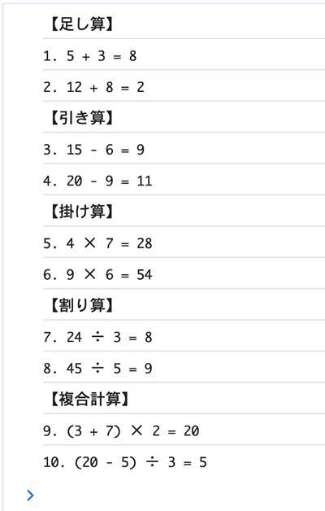

変数への代入で計算問題
- プロンプト例
JavaScriptをHTML内に、演算の問題を変数にシンプルな代入で計算の問題を１０問作成して
問題例
- 出力は、文字列と変数を「テンプレートリテラル」で表示
<!DOCTYPE html> <html lang="ja"> <head> <meta charset="UTF-8"> <title>計算問題10問</title> </head> <body> <h2>計算問題（consoleに出力）</h2> <p>検証 → コンソール を開いて確認してください</p> <script> // 足し算 const q1 = 5 + 3; const q2 = 12 + 8; // 引き算 const q3 = 15 - 6; const q4 = 20 - 9; // 掛け算 const q5 = 4 * 7; const q6 = 9 * 6; // 割り算 const q7 = 24 / 3; const q8 = 45 / 5; // 複合計算 const q9 = (3 + 7) * 2; const q10 = (20 - 5) / 3; console.log('【足し算】'); console.log(`1. 5 + 3 = ${q1}`); console.log(`2. 12 + 8 = ${2}`); console.log('【引き算】'); console.log(`3. 15 - 6 = ${q3}`); console.log(`4. 20 - 9 = ${q4}`); console.log('【掛け算】'); console.log(`5. 4 × 7 = ${q5}`); console.log(`6. 9 × 6 = ${q6}`); console.log('【割り算】'); console.log(`7. 24 ÷ 3 = ${q7}`); console.log(`8. 45 ÷ 5 = ${q8}`); console.log('【複合計算】'); console.log(`9. (3 + 7) × 2 = ${q9}`); console.log(`10. (20 - 5) ÷ 3 = ${q10}`); </script> </body> </html>
【実行例】

問題例
JavaScriptで単価1000円の商品を１個買ったときに支払う金額を求める
- 消費税率を10%で計算
- 出力は、テンプレートリテラルでコンソールに
const price = 1000; // 単価 const quantity = 1; // 個数 const taxRate = 0.1; // 消費税率10% const subtotal = price * quantity; const tax = subtotal * taxRate; const total = subtotal + tax; console.log(`支払金額は${total}円です`);